name: inverse layout: true class: center, middle, inverse --- # New Innovations in the Field ### ~90min --- name: content class: center, middle layout: false # Roadmap ## BIDS ### [BIDS structure](#datamanage) | [BIDS converters](#heudiconv) | [BIDS validator](#validator) | [BIDS extensions](#bidsextensions) | [pyBIDS](#pybids) ## BIDS Apps ### [MRIQC](#mriqc) | [fMRIPrep](#fmriprep) | [C-PAC](#cpac) | [Mindboggle](#mindboggle) ## Reproducibility ### [Neurodocker](#neurodocker) | [Openneuro](#openneuro) | [Neurovault](#neurovault) | [Datalad](#datalad) ### [Porcupine](#porcupine) ### [Neurostars](#neurostars) --- ## Data Management #### How do you manage your data? - storage, structure, metadata, version control? -- #### How do you share your data? - colleagues, students, other researchers? -- #### The Problem with heterogeneity in data management - hard for others (and you) to understand your data and keep track of changes - unnecessary metadata input - codes / scripts have to be adapted - huge effort to automate workflows and no way to automatically validate data sets - sharing data becomes a hustle --- name: datamanage ## [BIDS](http://bids.neuroimaging.io/) - Brain Imaging Data Structure A new standard for organizing & describing neuroimaging & behavioral data -- ### Benefits of BIDS - easy for other people to work on your data (for collaborations or contract changes) -- - growing number of data analysis software packages that understand BIDS -- - databases such as OpenNeuro, LORIS, COINS, XNAT, SciTran, and others accept and export datasets organized according to BIDS -- - Validation tools that can check your dataset integrity and let you easily spot missing values --- ## [BIDS](http://bids.neuroimaging.io/) - Brain Imaging Data Structure ### What does it look like? 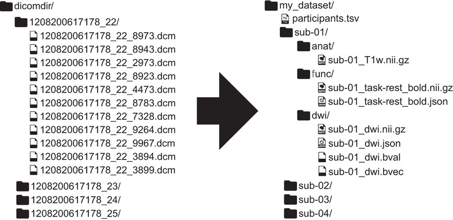 .right[*Gorgolewski, K. J. et al. 2016*] --- ## [BIDS](http://bids.neuroimaging.io/) - Brain Imaging Data Structure ### BIDS contains: participant information 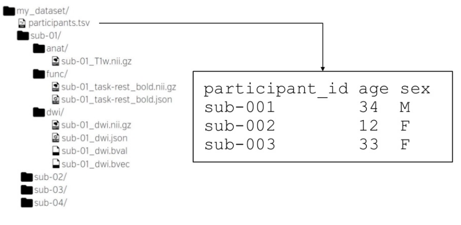 --- ## [BIDS](http://bids.neuroimaging.io/) - Brain Imaging Data Structure ### BIDS contains: data files (neuroimaging / behavioral) 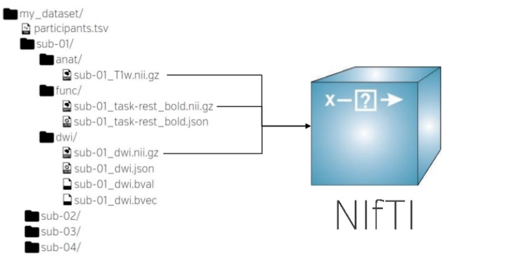 --- ## [BIDS](http://bids.neuroimaging.io/) - Brain Imaging Data Structure ### BIDS contains: study specific JSON files (sequence & paradigm) 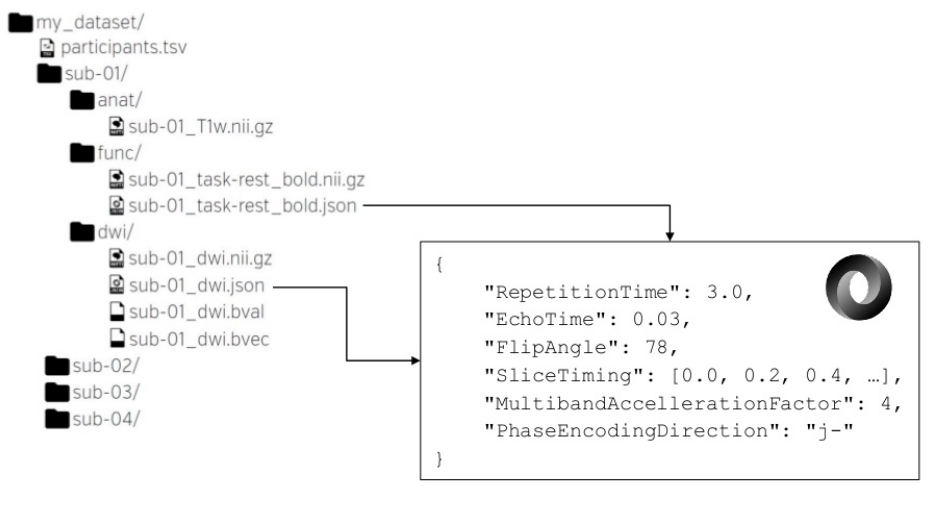 --- name: heudiconv ## BIDS converters There are two ways you can get your data into BIDS structure: **1. Data already converted and no access to DICOMs** - write a code snippet that reorganizes and renames the data - old fashion way (manual copy / paste) -- **2. Still access to DICOMs (data may or may not already be converted)** - use BIDS converters to get your data into shape - advantage that they also extract a vast amount of important metadata --- ## BIDS converters There are a lot of BIDS converters you can choose from (list is growing): - [AFNI BIDS-tools](https://github.com/nih-fmrif/bids-b0-tools) - [BIDS2ISATab](https://github.com/INCF/BIDS2ISATab) - [BIDSto3col](https://github.com/INCF/bidsutils/tree/master/BIDSto3col) - [BIDS2NDA](https://github.com/INCF/BIDS2NDA) - [bidskit](https://github.com/jmtyszka/bidskit) - [dac2bids](https://github.com/dangom/dac2bids) - [Dcm2Bids](https://github.com/cbedetti/Dcm2Bids) - [DCM2NIIx](https://github.com/neurolabusc/dcm2niix) - [DICM2NII](https://de.mathworks.com/matlabcentral/fileexchange/42997-dicom-to-nifti-converter--nifti-tool-and-viewer) - **[HeuDiConv](https://github.com/nipy/heudiconv) <- we can recommend** - [OpenfMRI2BIDS](https://github.com/INCF/openfmri2bids) - [ReproIn](https://github.com/ReproNim/reproin) (HeuDiConv-based turnkey solution) - [bids2xar](https://github.com/lwallace23/bids2xar) (for XNAT import) - [XNAT2BIDS](https://github.com/kamillipi/2bids) - [Horos (Osirix) export plugin](https://github.com/mslw/horos-bids-output) - [BIDS2NIDM](https://github.com/incf-nidash/PyNIDM/blob/master/nidm/experiment/tools/NIDM2BIDSMRI.py) --- name: validator ## [BIDS validator](http://incf.github.io/bids-validator/) - Is it BIDS yet? Use BIDS validator to validate your dataset structure **and** data - 3 ways -- #### [web validator](http://incf.github.io/bids-validator/) - Open [https://incf.github.io/bids-validator/](https://github.com/INCF/bids-validator) via Google Chrome or Mozilla Firefox (currently the only supported browsers) - Select folder with your BIDS dataset (no data is uploaded!) --- ## [BIDS validator](http://incf.github.io/bids-validator/) - web validator 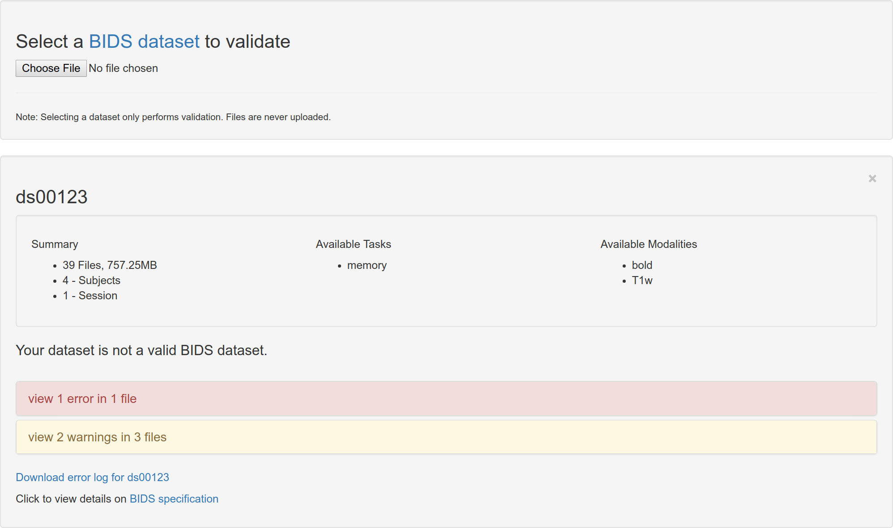 --- ## [BIDS validator](http://incf.github.io/bids-validator/) - web validator 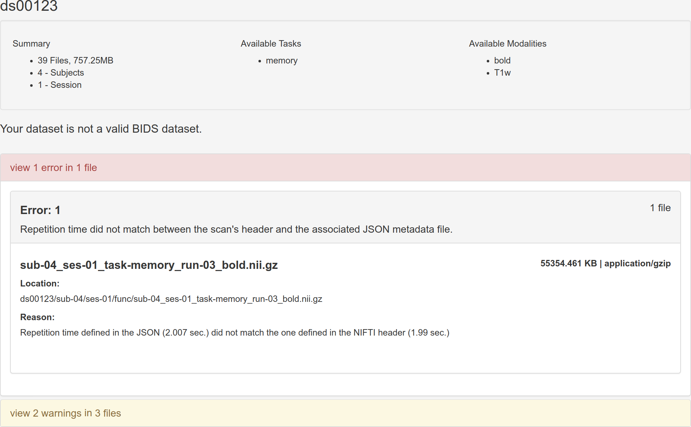 --- ## [BIDS validator](http://incf.github.io/bids-validator/) - web validator <img src="images/bids_validator03.png" width="95%" /> --- ## [BIDS validator](http://incf.github.io/bids-validator/) - web validator 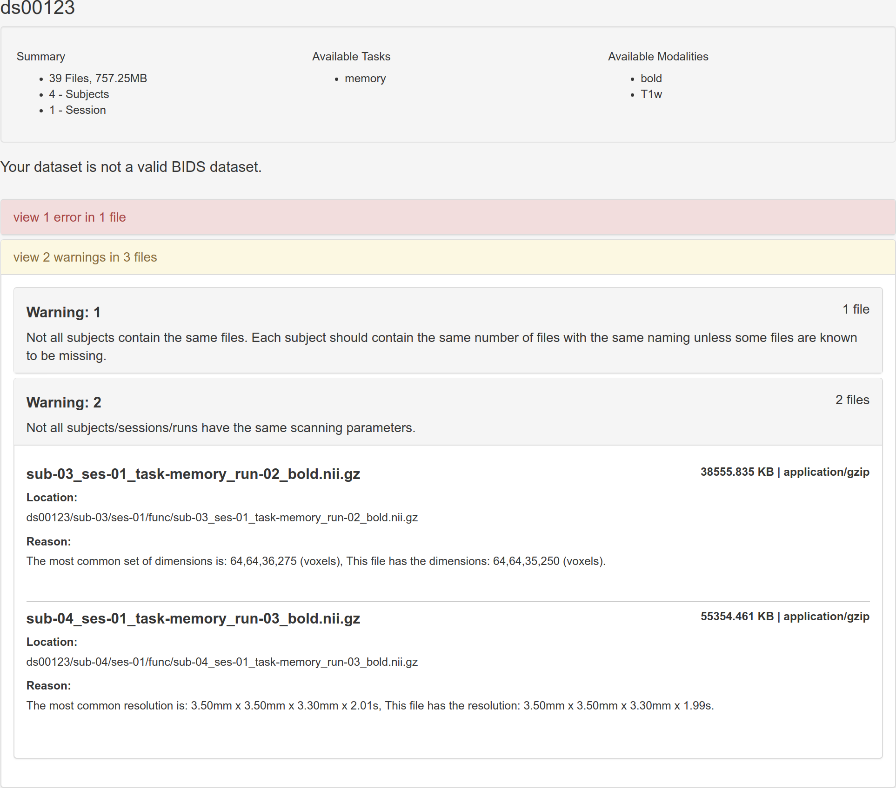 --- ## [BIDS validator](http://incf.github.io/bids-validator/) - Is it BIDS yet? Use BIDS validator to validate your dataset structure **and** data - 3 ways #### [web validator](http://incf.github.io/bids-validator/) - Open [https://incf.github.io/bids-validator/](https://github.com/INCF/bids-validator) via Google Chrome or Mozilla Firefox (currently the only supported browsers) - Select folder with your BIDs dataset (no data is uploaded!) -- #### command line version - package - install [node.js](https://nodejs.org/en/) - install `bids-validator` package using `pip`: `pip install -g bids-validator` - run bids-validator on your dataset -- #### command line version - docker - get the docker image: `docker pull bids/validator` - run `docker run -ti --rm -v /path/to/data:/data:ro bids/validator /data` --- name: pybids ## [PyBIDS](https://github.com/INCF/pybids) - Python library to centralize interactions with datasets conforming BIDS format - Install via `pip install pybids` -- #### Use as follows: ```python from bids.grabbids import BIDSLayout layout = BIDSLayout("/ds0114/") ``` ```python # Get number of subjects layout.get_subjects() >>> ['01', '02', '03', '04', '05', '06', '07', '08', '09', '10'] ``` ```python # Get specific files layout.get(subject='01', modality="anat", session="test") >>> [File(filename='/ds0114/sub-01/ses-test/anat/sub-01_ses-test_T1w.nii.gz', subject='01', session='test', type='T1w', modality='anat'), File(filename='/ds0114/sub-01/ses-test/anat/sub-01_ses-test_T1w_bet.nii.gz', subject='01', session='test', type='bet', modality='anat')] ``` --- name: bidsextensions ## BIDS extensions - [Positron Emission Tomography (PET)](https://docs.google.com/document/d/1mqMLnxVdLwZjDd4ZiWFqjEAmOmfcModA_R535v3eQs0) - [Common Derivatives](https://docs.google.com/document/d/1Wwc4A6Mow4ZPPszDIWfCUCRNstn7d_zzaWPcfcHmgI4) - [Models Specification](https://docs.google.com/document/d/1bq5eNDHTb6Nkx3WUiOBgKvLNnaa5OMcGtD0AZ9yms2M) - [Electroencephalography (EEG)](https://docs.google.com/document/d/1ArMZ9Y_quTKXC-jNXZksnedK2VHHoKP3HCeO5HPcgLE) - [intracranial Electroencephalography (iEEG)](https://docs.google.com/document/d/1qMUkoaXzRMlJuOcfTYNr3fTsrl4SewWjffjMD5Ew6GY) - [Eye Tracking including Gaze Position and Pupil Size](https://docs.google.com/document/d/1eggzTCzSHG3AEKhtnEDbcdk-2avXN6I94X8aUPEBVsw) --- name: bidsapps ## [BIDS Apps](http://bids-apps.neuroimaging.io) Container image capturing neuroimaging pipeline that takes BIDS as input -- - each BIDS app has the same core set of command line arguments -- - does not depend on any software outside of the image other than the container engine -- - deposited in the Docker Hub repository (openly accessible) -- - each app is versioned and all of the historical versions are available to download (easy to switch between versions) -- - by reporting the BIDS App name and version in a manuscript, authors can provide others with the ability to exactly replicate their analysis -- - works on Linux, macOS, windows -- - can be transformed into singularity containers for applications on HPCs --- name: bidsapps ## [BIDS Apps](http://bids-apps.neuroimaging.io) Container image capturing neuroimaging pipeline that takes BIDS as input 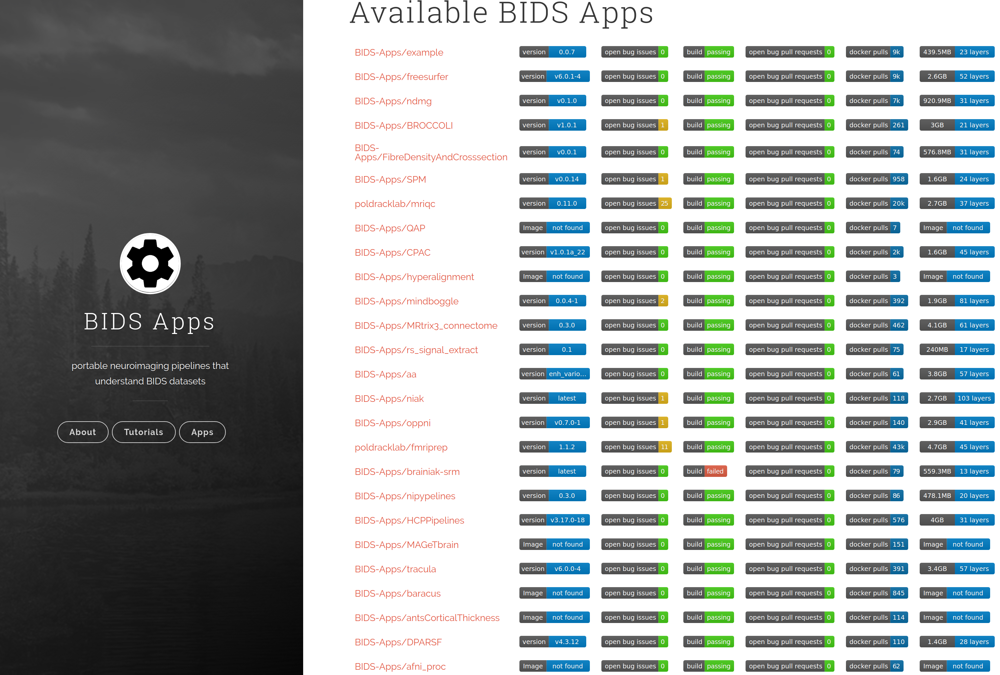 --- name: mriqc ## [MRIQC](http://mriqc.readthedocs.io/en/latest/) - the problem? The quality of MRI data is not necessarily good - **Quality Control is important!** 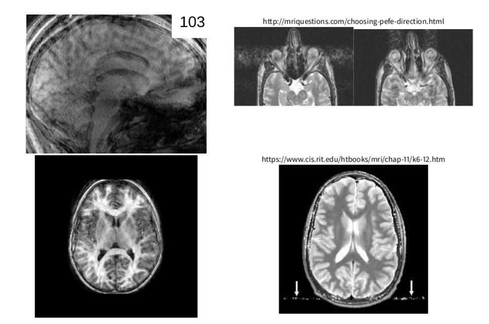 .left[<small>[*Esteban, O., FMRIPREP and MRIQC Focus at Stanford, January 2017](https://www.slideshare.net/OscarEsteban5/fmriprep-mriqc-focus-mriqc)</small>] --- ## [MRIQC](http://mriqc.readthedocs.io/en/latest/) - How to do MRI Quality Control Check manually? Possible, but time consuming -> **Solution: Use [MRIQC](http://mriqc.readthedocs.io/en/latest/)** -- - objective evaluation of your data (based on huge comparison dataset) - completely automated workflow (available via Docker / BIDS App) - extraction of structural and functional image quality metrics (IQMs): - physical phantoms ([Price et al., 1990](http://dx.doi.org/10.1118/1.596566)) - no-reference image quality metrics ([Woodard and Carley-Spencer, 2006](http://doi.org/10.1385/NI:4:3:243)) - aim artifacts and analyze noise distribution ([Mortamet et al., 2009](http://doi.org/10.1002/mrm.21992)) - combined general volumetric and artifact-targeted IQMs ([Pizarro et al., 2016](https://doi.org/10.3389/fninf.2016.00052)) - IQMs and visual reports per subject, as well as the whole group --- ## [MRIQC](http://mriqc.readthedocs.io/en/latest/) - anatomical workflow <img src="images/MRIQC_anat_workflow.svg" width="100%" /> .left[<small>*[MRIQC docs](https://mriqc.readthedocs.io/en/latest/workflows.html), (C) Esteban, O. </small>] --- ## [MRIQC](http://mriqc.readthedocs.io/en/latest/) - anatomical IQMs 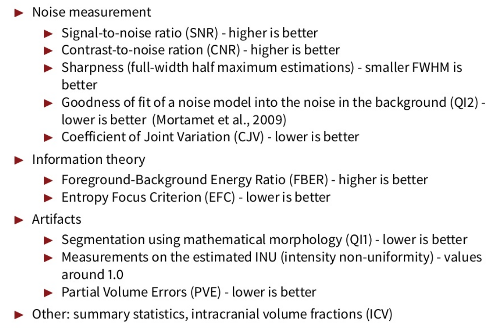 .left[<small>*[Esteban, O., FMRIPREP and MRIQC Focus at Stanford, January 2017](https://www.slideshare.net/OscarEsteban5/fmriprep-mriqc-focus-mriqc)</small>] --- ## [MRIQC](http://mriqc.readthedocs.io/en/latest/) - functional workflow <img src="images/MRIQC_func_workflow.svg" width="100%" /> .left[<small>*[MRIQC docs](https://mriqc.readthedocs.io/en/latest/workflows.html), (C) Esteban, O. </small>] --- ## [MRIQC](http://mriqc.readthedocs.io/en/latest/) - functional IQMs 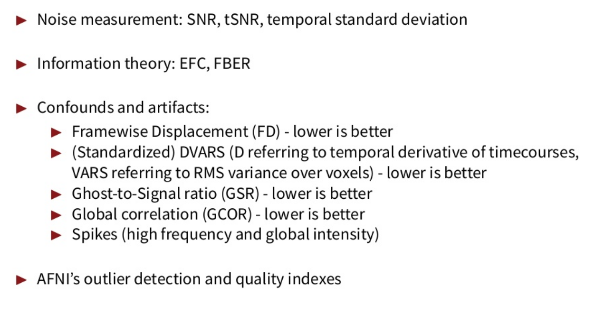 .left[<small>*[Esteban, O., FMRIPREP and MRIQC Focus at Stanford, January 2017](https://www.slideshare.net/OscarEsteban5/fmriprep-mriqc-focus-mriqc)</small>] --- ## [MRIQC](http://mriqc.readthedocs.io/en/latest/) - classifier for T1w images MRIQC is released with two classifiers (already trained) to predict image quality of T1w images Trained on [ABIDE](http://fcon_1000.projects.nitrc.org/indi/abide/) and [DS030](https://openfmri.org/dataset/ds000030/) Predicts the quality labels (0="accept", 1="reject") on a features table computed by mriqc The command itself: `mriqc_clf --load-classifier -X aMRIQC.csv` Also possible to build and train custom classifiers --- ## [MRIQC](http://mriqc.readthedocs.io/en/latest/) - visual reports Check out the two examples to see how a visual report looks like: - [Group Anatomical Report](http://web.stanford.edu/group/poldracklab/mriqc/reports/anat_group.html) - [Group Functional Report](http://web.stanford.edu/group/poldracklab/mriqc/reports/func_group.html) --- name: fmriprep ## [fMRIPrep](http://fmriprep.readthedocs.io/en/latest/index.html) - What is it? fully automated fMRI data preprocessing tool state-of-the-art interfaces robust to variations in scan acquisition protocols easy interpretable and comprehensive error and output reporting "glass" rather than "black" box .left[<small>[*Gorgolewski, K. J., presentaion at Stanford, January 2017](https://www.slideshare.net/chrisfilo1/fmriprep-robust-and-easy-to-use-fmri-preprocessing-pipeline)</small>] --- ## [fMRIPrep](http://fmriprep.readthedocs.io/en/latest/index.html) - What does it do? 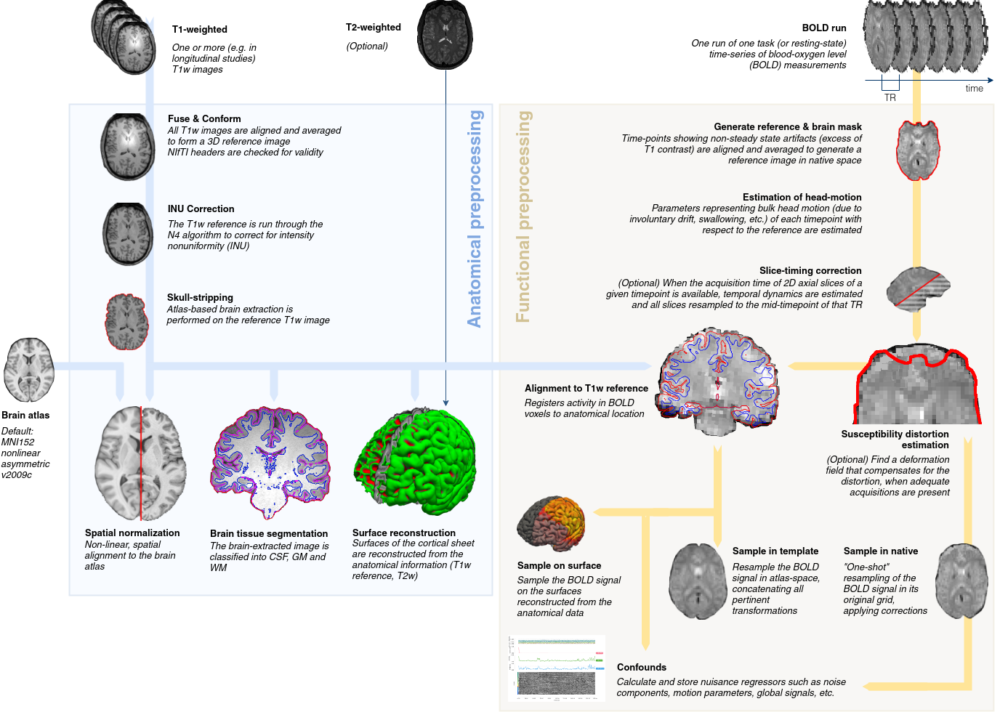 --- ## [fMRIPrep](http://fmriprep.readthedocs.io/en/latest/index.html) - Where do I sign,... I mean start? #### Visual reports - [Example report](http://fmriprep.readthedocs.io/en/latest/_static/sample_report.html) - [AROMA component classification example](http://fmriprep.readthedocs.io/en/latest/_images/aroma.svg) -- #### Run it - You can install fMRIPrep on your system with pip - You can run fMRIPrep via docker / singularity containers - You can run fMRIPrep via [OpenNeuro.org](https://openneuro.org/) -- #### For everything else - Check out [http://fmriprep.readthedocs.io](http://fmriprep.readthedocs.io/en/latest/index.html) --- name: cpac ## [C-PAC](https://fcp-indi.github.io) - configurable pipeline for the analysis of connectomes -- - pipeline to automate preprocessing and analysis of large-scale datasets - most cutting-edge functional connectivity preprocessing and analysis algorithms - configurable to enable "plurality" – evaluate different processing parameters and strategies - automatically identifies and takes advantage of parallelism on multi-threaded, multi-core, and cluster architectures - "warm restarts" – only re-compute what has changed - open science – open source .left[<small>*[cpac docs](http://fcp-indi.github.io/docs/user/index.html)</small>] --- ## [C-PAC](https://fcp-indi.github.io) - What can it do? .center[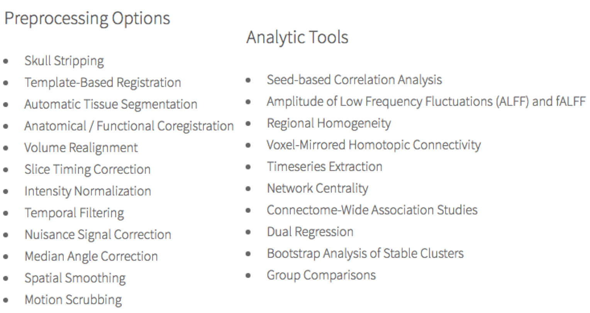] .left[<small>*[cpac docs](http://fcp-indi.github.io/docs/user/index.html)</small>] --- name: mindboggle ## [Mindboggle](http://www.mindboggle.info) - What is it? - a comprehensive and extensive pipeline for structural images - computes & outputs volume, surface, and tabular data containing label, feature, and shape information for further analysis - combines [FreeSurfer](https://surfer.nmr.mgh.harvard.edu/) and [ANTs](https://github.com/stnava/ANTs/) - available via Docker, BIDS app or native installation - Attention: extremely high computational cost! .left[<small>*[mindboggle docs](http://www.mindboggle.info) & [mindboggle paper](https://doi.org/10.1371/journal.pcbi.1005350)</small>] --- ## [Mindboggle](http://www.mindboggle.info) - What is it? 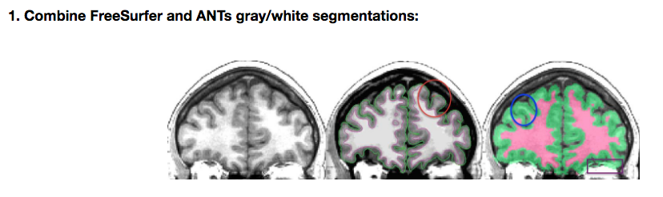 .left[<small>*[mindboggle docs](http://www.mindboggle.info) & [mindboggle paper](https://doi.org/10.1371/journal.pcbi.1005350)</small>] --- ## [Mindboggle](http://www.mindboggle.info) - What is it? 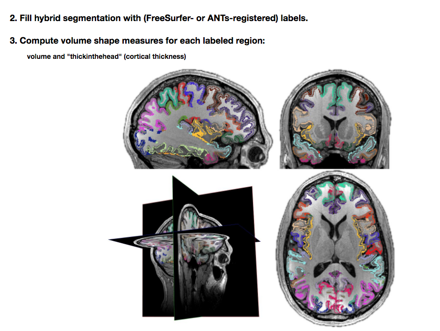 .left[<small>*[mindboggle docs](http://www.mindboggle.info) & [mindboggle paper](https://doi.org/10.1371/journal.pcbi.1005350)</small>] --- ## [Mindboggle](http://www.mindboggle.info) - What is it? 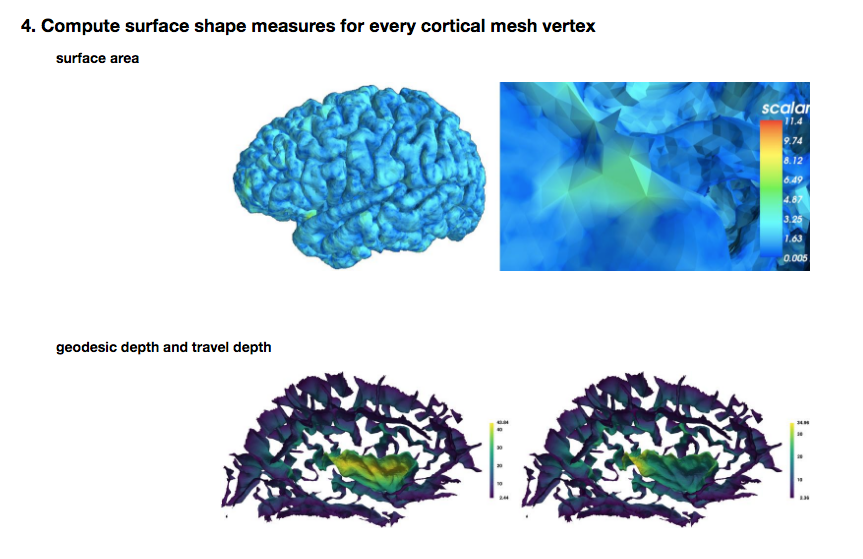 .left[<small>*[mindboggle docs](http://www.mindboggle.info) & [mindboggle paper](https://doi.org/10.1371/journal.pcbi.1005350)</small>] --- ## [Mindboggle](http://www.mindboggle.info) - What is it? 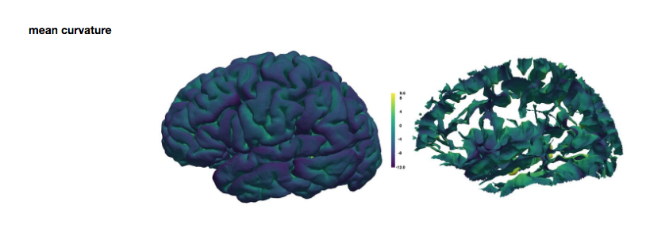 .left[<small>*[mindboggle docs](http://www.mindboggle.info) & [mindboggle paper](https://doi.org/10.1371/journal.pcbi.1005350)</small>] --- ## [Mindboggle](http://www.mindboggle.info) - What is it? 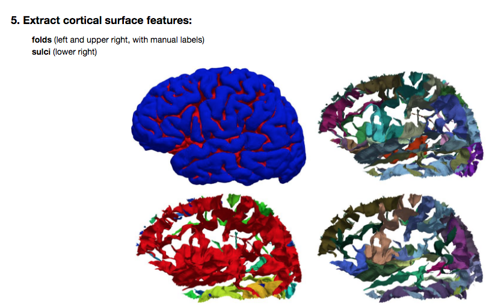 .left[<small>*[mindboggle docs](http://www.mindboggle.info) & [mindboggle paper](https://doi.org/10.1371/journal.pcbi.1005350)</small>] --- ## [Mindboggle](http://www.mindboggle.info) - What is it? 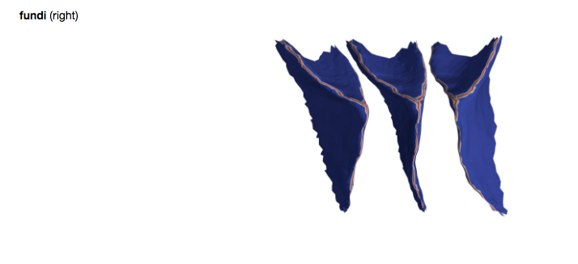 .left[<small>*[mindboggle docs](http://www.mindboggle.info) & [mindboggle paper](https://doi.org/10.1371/journal.pcbi.1005350)</small>] --- ## [Mindboggle](http://www.mindboggle.info) - What is it? 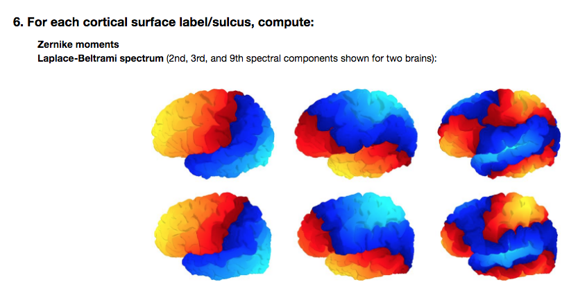 .left[<small>*[mindboggle docs](http://www.mindboggle.info) & [mindboggle paper](https://doi.org/10.1371/journal.pcbi.1005350)</small>] --- ## [Mindboggle](http://www.mindboggle.info) - What is it? 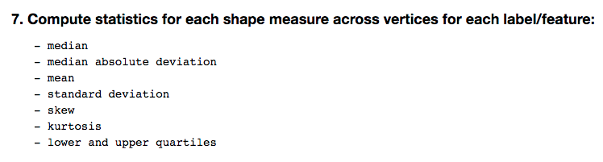 .left[<small>*[mindboggle docs](http://www.mindboggle.info) & [mindboggle paper](https://doi.org/10.1371/journal.pcbi.1005350)</small>] --- name: neurodocker ## [Neurodocker](https://github.com/kaczmarj/neurodocker) - What is it? Neurodocker is a command-line program that generates custom Dockerfiles and Singularity recipes for neuroimaging and minifies existing containers Allows you to quickly install: - AFNI - ANTs - Convert3D - dcm2niix - FreeSurfer - FSL - Matlab Compiler Runtime (i.e. no license needed) - MINC - Miniconda -> all python packages you want - MRtrix3 - NeuroDebian - PETPVC - SPM12 --- ## [Neurodocker](https://github.com/kaczmarj/neurodocker) - How does it work? Here an example that installs FSL, ANTs, SPM12, nipype, nilearn, etc. 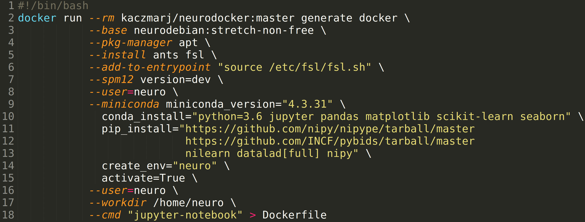 --- ## [Neurodocker](https://github.com/kaczmarj/neurodocker) - How does it work? The corresponding Dockerfile afterwards looks something like this: 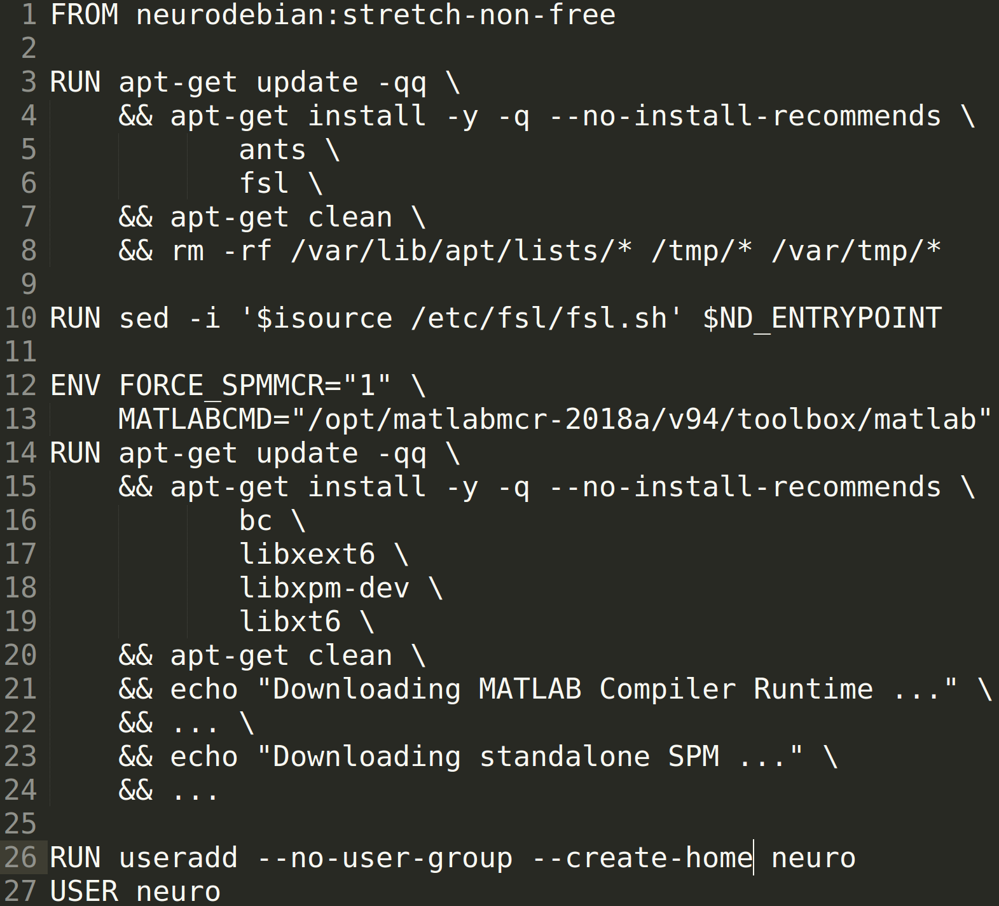 <img src="images/dockerfile_2.png" width="48%"/> --- name: openneuro ## [Openneuro](https://openneuro.org/) - What is it? 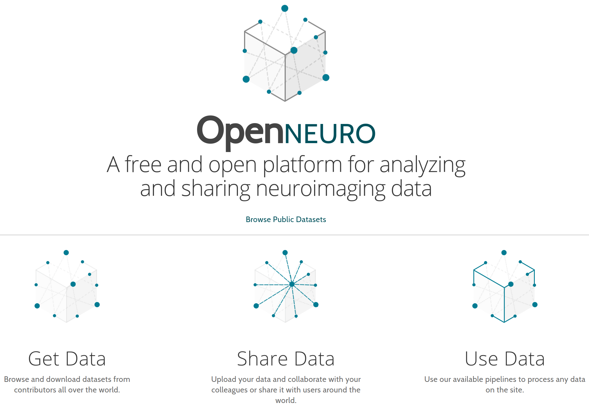 It's best to show you: [https://openneuro.org/](https://openneuro.org/) --- name: neurovault ## [Neurovault](https://neurovault.org/) A public repository of unthresholded statistical maps, parcellations, and atlases of the brain As an example: <img src="images/neurovault.png" width="90%"/> --- name: datalad ## [Datalad](http://datalad.org/) Providing a data portal and a versioning system for everyone, DataLad lets you have your data and control it too. ### Discover Data - Do you want all publicly available T1w images of women between the age of 20 to 30? Easy with datalad `datalad search female 'bids:age(years):[20 TO 30]' T1w` -- - Only download and store the files locally that you need at the moment with `get` and `drop` -- - Publish your own data and make it easily accessible for everyone. Check out all [datalad datasets](http://datasets.datalad.org/) -- - And there is more: Store every command / step that you do in your dataset (like git version control) --- name: porcupine ## [Porcupine](https://timvanmourik.github.io/Porcupine/) - a GUI for Nipype 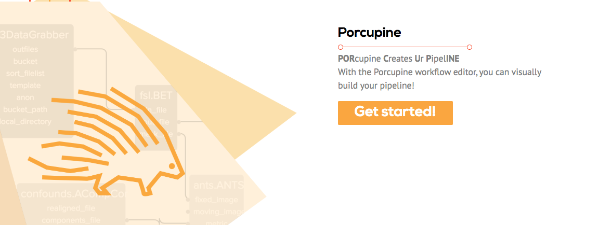 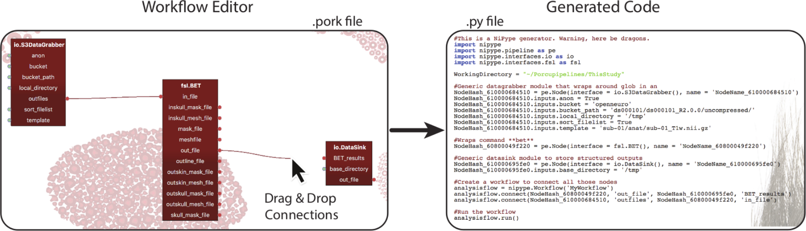 .left[<small>*[by Tim van Mourik](https://github.com/TimVanMourik/Porcupine), check the [Porcupine preprint here](https://www.biorxiv.org/content/early/2017/09/12/187344) </small>] --- name: neurostars ## [Neurostars](https://neurostars.org) Very simple: **a question and answer site for neuroinformatics** Ask any neuroimaging question and get answer usually within a 2-24 Our own StackOverflow <img src="images/neurostars.png" width="70%"/> --- layout: true class: center, middle, inverse --- name: questions # Questions?